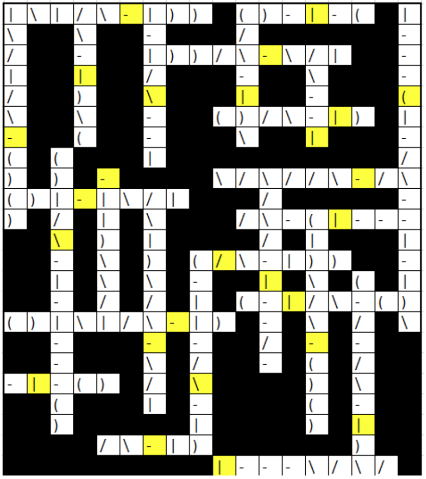

Solution: Segmented
Answer: INCLEMENT
Written by Xue Heng
From the title and the clues, we might come to the realization that the crossword grid is supposed to be filled up with “letter segments” instead of letters. The letter segments used and their descriptions are as follows:
\ backslash
/ slash
- x-axis
| y-axis
( waning crescent
) waxing crescent
Each letter is made up of a string of letter segments, which is consistent throughout the puzzle (order of segments that make up each letter is also consistent throughout, and tries to mimic a common way each letter is written):
A: / \ -
B: | ) )
C: (
D: | )
E: | - - -
F: unused
G: ( - |
H: | - |
I: - | -
J: unused
K: | / \
L: | -
M: | \ / |
N: | \ |
O: unused
P: | ) (same as D, but we can disambiguate easily using the clues given, if it matters)
Q: unused
R: | ) \
S: ( )
T: - |
U: unused
V: \ /
W: \ / \ /
X: / \
Y: \ / |
Z: - / -
Solvers might come to the realization that each clue has exactly one letter segment missing. For example, 1 across has the answer NAB, and the letter segments given are 2 backslash, 1 slash, 2 waxing crescent, 3 y-axis, where we are missing 1 x-axis to make up the letter “A”. It is always the case that the missing letter segment only appears once in the word, so that its position in the grid can be unambiguously pinpointed. Missing letter segments never appear at intersections.
Here are the answers to all the clues, with the missing segment next to it:
Across
1. NAB -
4. SIC |
6. BAY -
8. SAD |
11. WAX -
13. SHY -
15. ACE |
17. CAB /
19. GAS |
20. SNAP -
21. IS |
22. AD -
23. EW |
Down
1. MASS -
2. ARC |
3. HAT \
4. CAR |
5. ECLAIR (
7. AT |
9. SKIES \
10. TRY -
12. WIZ |
14. XRAY -
16. CRASS -
17. GLAD \
18. CZAR |
Here is the grid with missing segments filled in in the yellow cells:

Reading the missing segments in row-major order, we get the string:
- | - | \ | ( | - | - - - | \ / | | - - - | \ | - |
The only sensible way to parse these letter segments is INCLEMENT, which is the answer to the puzzle.
Author's Notes
Mid hunt update: As the hunt progressed, I got increasingly surprised by how many people liked this puzzle. It didn't rank within the top half of puzzles in this hunt according to my personal ranking, and I didn't feel particularly excited or inspired when writing this either. I guess crosswords and their variants are just more popular than I thought they'd be (to be fair, I hardly do crosswords myself). I'm glad many of you enjoyed this puzzle!